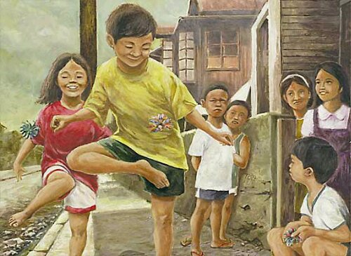
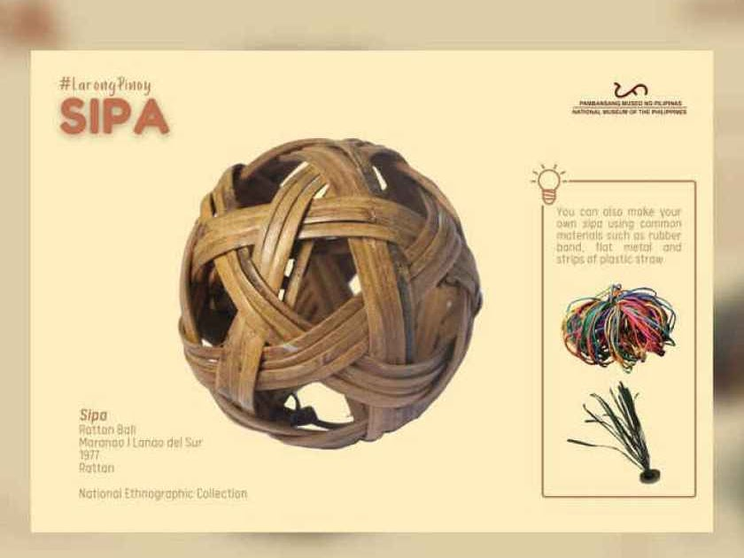

Quick Breakdown
One of the most popular Philippine traditional games is sipa. The term “sipa” refers to the game itself, the object being hit, and the act of hitting.
This game tests the agility, speed, and control of the players, who use their feet, knees, elbows, or hands to continuously hit the sipa before it touches the ground. It is a game of stamina, either played individually or in teams (National Museum of the Philippines/Facebook).
History of SIPA
Filipinos started playing Sipa in the 15th century before the Philippines was colonised by Spain. Sipa was even considered the Philippines’ national sport before Arnis replaced it in 2009 during the administration of former President Gloria-Macapagal Arroyo.

Sipa which means “kick” in Filipino also refers to the ball used in the game which has many variations and is usually made by the players themselves. The two most popular types of sipa ball are the lead washer and rattan ball. The lead washer sipa consists of a coin-like object with strips of cloth or plastic straws attached to it. The rattan ball is made of rattan strips formed into a hollow ball that is at least 4 inches in diameter.
Sipa can be played by two or more players. A player tosses the sipa into the air and prevents it from touching the ground through continuous kicking. Each kick is counted as a point. A turn ends once the sipa is dropped. Hence, the player who can keep the ball in the air the longest and hits it the most wins the game. (Christchurch City Libraries Ngā Kete Wānanga o Ōtautahi Blogs).